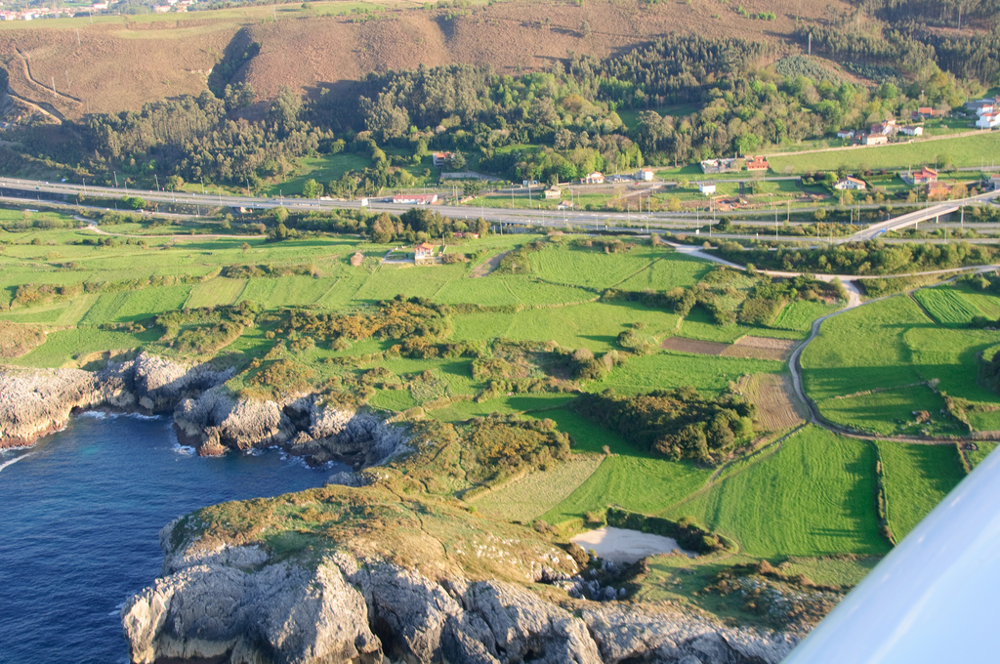

We'll take care of the planning so you can enjoy your vacation more.
Gulpiyuri, Spain
This wonderful beach in Spain is a great place to travel to. Gulpiyuri is near Llanes and is about 328 feet away from the Cantabrian Sea. This beach is actually not connected to the ocean. It was created by a sink hole and now there are soft sands to sit on and beautiful cliffs to look at while tanning. You can get to this wonderful beach by foot or by kayak.
Fast facts about Gulpiyuri
Gulpiyuri is referred to as the "world's smallest beach"
Gulpiyuri means "water circle"
Parts of this beach were formed during the Ice Age
Gulpiyuri is listed as a natural monument by the Principality of Austrias
For more information and fast facts go to Spain-holiday!
Art Gallery

Vacationer Reviews
Jennifer_312: "My husband and I went here for our twentieth anniversary and let me just say I give this location a 5 out of 5 beachballs!!! Gulpiyuri was so relaxing and the kayak ride up was just darling!!! I would totally go here again!"
TomtheSurferzzzz_:"I went here with a few friends on a trip to Spain. Even though there weren't any waves, it was a very relaxing time. Hang ten broski!!!"